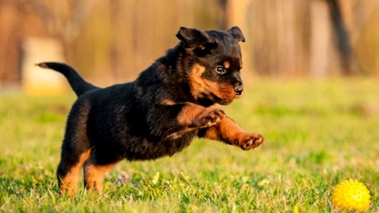

Bruce Wayne

Age: 6 months
Breed: Rottwailer
Meet Bruce Wayne and he’s definitely the class clown! He’s a 7-month-old male neutered rottweiler that I rescued following nairobi floods. His owners relinquished him to a shelter just before moving upcountry but he had already been neglected for quite some time as he was emaciated! He was also Heartworm positive but we have since treated that and he has a clean bill of health!
About Us

#ForPetsSake Animal Shelter is an all-volunteer nonprofit corporation serving Nairobi and beyond. Our mission is to provide a safe haven for the pets, either with a foster family or at an area kennel, until they can be reunited with their owners. Your donation will help us make the world a safer place for neglected animals and pets.